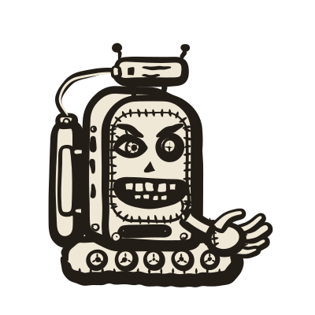
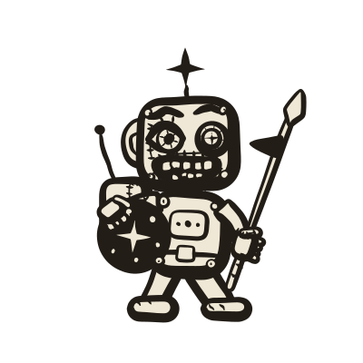
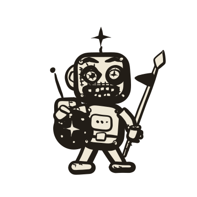

U01
CRAWLER
gierig
sammelt Datenfelder · Batch 1 · Must
Skizze: Platte mit Gesicht, CURL>-Schild, DATA-Rolle, Schaufel. Schrift entfällt (Spiegelregel), das Schild trägt einen Cursor-Block.
3 + Detail#detail


1
2
3
4
5
6
1Menschliches Auge unter schiefer Braue
2Linsen-Auge, ✦ als Pupille
3Menschliche Zähne, Daten-Schlitz am Bauch
4Greifhand statt Schaufel
5Gesicht aufgenäht: Kreuzstich-Naht
6Datentank, Füllstand leer (kommt per Code)
U04
CRITIC
pedantisch
prüft Ergebnisse · Batch 1 · Must
Skizze: Box auf Ketten mit Brille und Checkliste. Dazu aus der Art-Bibel: Lupe und Stift hinterm Ohr.
1Menschliches Auge hinter der Linse, Braue streng gesenkt
2Linsen-Auge mit ✦, andere Braue skeptisch hoch
3Menschliches Ohr mit Stift
4Zusammengepresste Lippen, Nase, Naht ums Gesicht
5Hand mit Lupe
6Checkliste auf der Flanke
U02
EXECUTOR
ausführungsfreudig
führt Befehle aus · Batch 0 · Maß aller Agenten
Skizze: Strichmännchen mit Bildschirmkopf, Schild und Speer. Dazu aus der Art-Bibel: ✦ auf dem Kopf, Rucksack mit Antenne.
3 + Detail#detail


1
2
3
4
5
6
1Menschliches Auge, weit offen, Braue hoch
2Linsen-Auge mit ✦, ✦-Antenne auf dem Kopf
3Breites Grinsen mit Zähnen, Naht ums Kinn
4Hand am Speer, Wimpel
5Hand am Schild, ✦ als Wappen
6Brustklappe mit Nieten